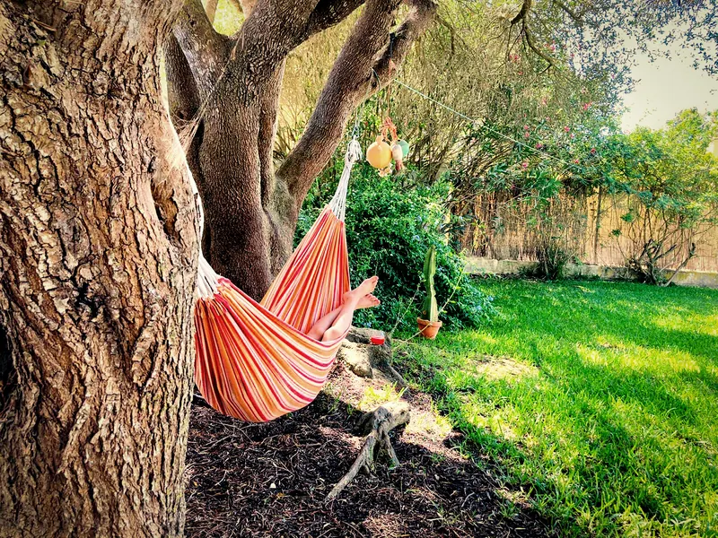
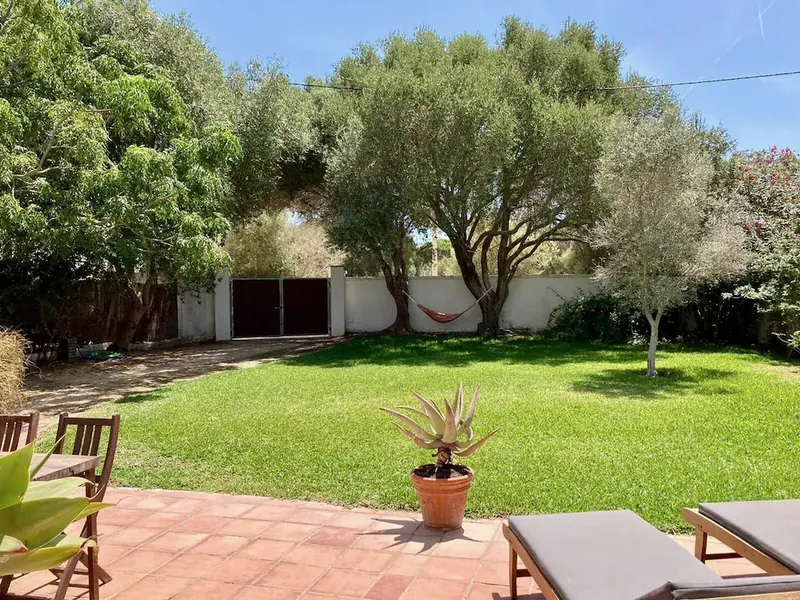
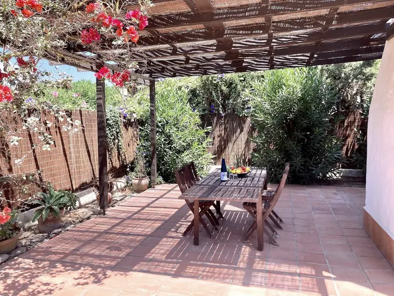
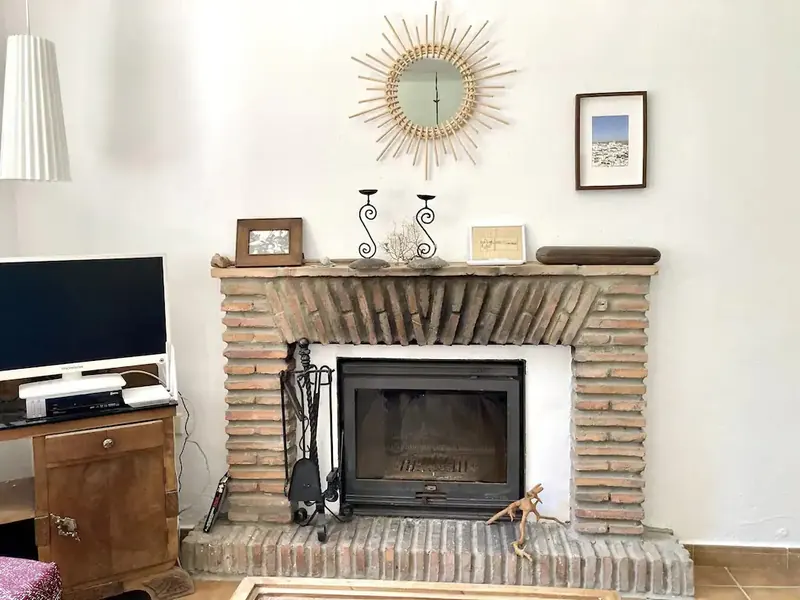
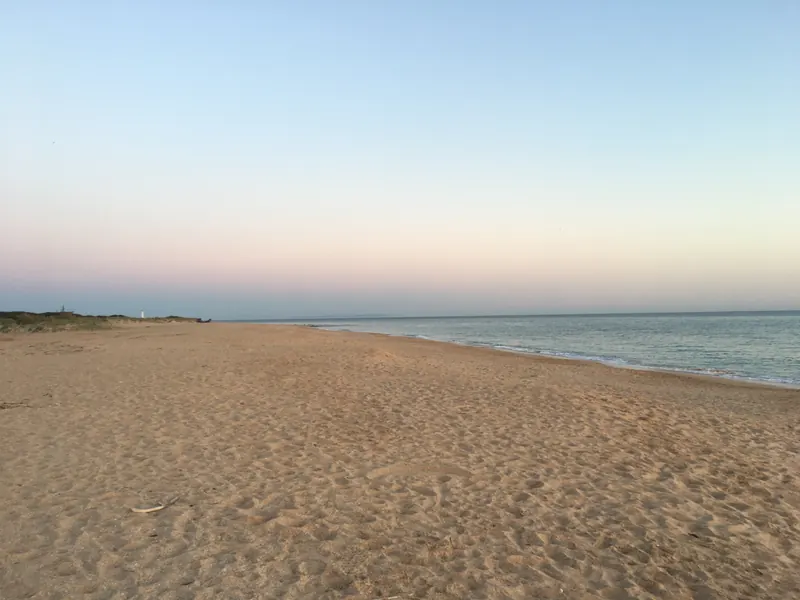
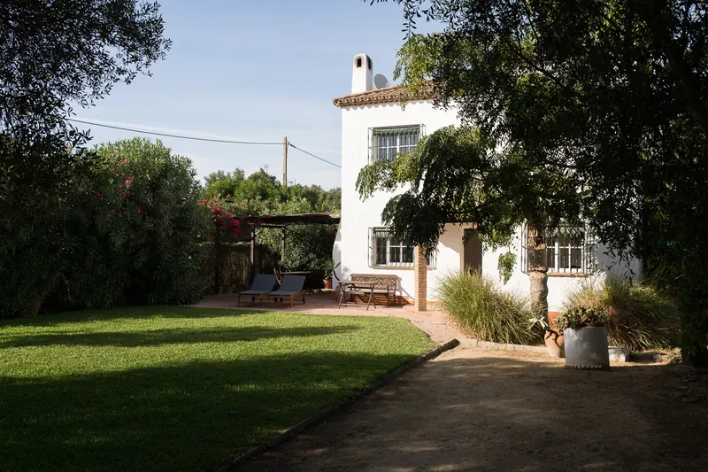

Verano de playa
Días largos, chiringuitos al atardecer y noches en el jardín. Es temporada alta: reserva con antelación.
Casa andaluza encalada junto al Cabo de Trafalgar, en Cádiz. Para bajar el ritmo en cualquier época del año.

Una casa encalada de dos plantas, rodeada de un jardín vallado con olivos, césped y buganvillas.
Por la mañana, café bajo la pérgola. Por la tarde, un paseo hasta la playa. Por la noche, cena en el jardín o junto a la chimenea.
Está en el borde de Zahora, entre Los Caños de Meca y El Palmar: una zona tranquila de casas bajas, caminos de arena y pinares.

Vallado, con césped y olivos. Los niños juegan y tú descansas.

Pérgola con buganvillas, comedor exterior, tumbonas y barbacoa.

Las noches de otoño e invierno, cuando Zahora está tranquila.

La Mangueta está a 1,2 km. El faro de Trafalgar, a 5 minutos en coche.
Pronto añadiremos fotos de los dormitorios.
Zahora es uno de los rincones menos urbanizados de la Costa de la Luz: casas bajas, caminos de arena y el mar a un paseo.
A pie
En coche
Desde el aeropuerto
Te recomendamos venir en coche: las playas y los pueblos están repartidos por la costa.
Cómo llegar a la casaPlayas salvajes, dunas, pinares y pueblos blancos. Y en primavera, el atún rojo de almadraba de Barbate.
La Mangueta, Zahora, la playa del Faro y las calas de Los Caños.
Dunas, el pinar y los acantilados del Parque Natural de La Breña.
El sol se pone sobre el Atlántico, con el faro de Trafalgar a contraluz.
Leer la guía de la zona: Vejer, Barbate, Bolonia y dónde comer
Días largos, chiringuitos al atardecer y noches en el jardín. Es temporada alta: reserva con antelación.
Buen tiempo, playas tranquilas, el mar todavía templado y la temporada del atún de almadraba.
Surf en El Palmar, rutas por La Breña y tardes junto a la chimenea. Ideal para estancias largas.
Sobre el levante. Algunos días sopla fuerte el viento de levante, que forma parte del carácter de la zona. Esos días son buenos para el kite, para las playas más resguardadas o para una tarde tranquila en el jardín.
«Aquí irá una reseña real de un huésped, citada con su permiso.»Nombre, país, mes y año*
«Aquí irá una segunda reseña real, mejor si habla del jardín o de la ubicación.»Nombre, país, mes y año*
«Y una tercera, por ejemplo de la familia que repite cada verano.»Nombre, país, mes y año*
X,X de 5 en XX opiniones de Vrbo*. Leer todas las opiniones
Pendiente de confirmar con el propietario*.
Pendiente de confirmar*.
Pendiente de confirmar*.
Es muy recomendable. Zahora es una zona dispersa, y las playas, los pueblos y los restaurantes están repartidos por la costa.
Pendiente de confirmar*.
Depende de la temporada. Consulta la disponibilidad o escríbenos*.
Se alternan el poniente, suave y fresco, y el levante, más fuerte. Los días de levante, las playas más resguardadas y el jardín son el mejor plan.

Escríbenos con tus fechas y el número de personas, o reserva en la plataforma que prefieras.
Te contesta directamente el propietario.
La reserva y el pago se hacen en la plataforma o directamente con el propietario, no en esta web.